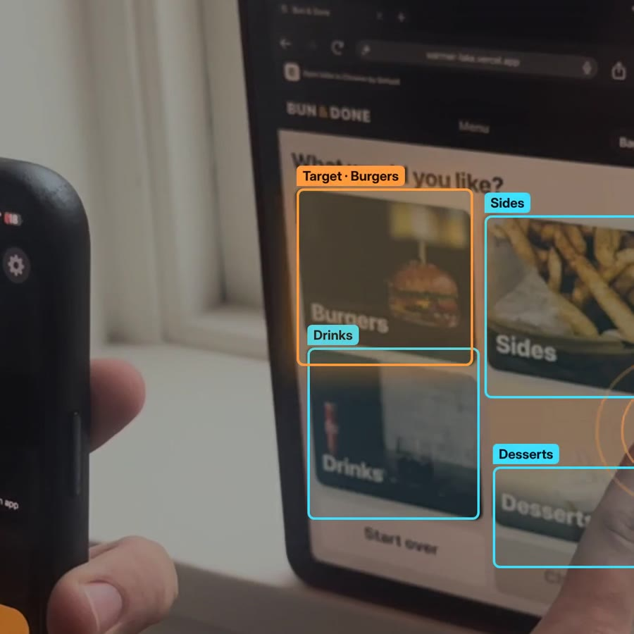

Any touchscreen. No sight needed.
Kiosks, card readers and check-in screens don't talk. Warmer reads the screen through your phone's camera and guides your finger to the right button with vibration and a few words.
A full order, blindfolded
Dylan can see, so he wore a blindfold. Warmer found every button on a kiosk it had never seen, start to finish.
The cashier was replaced by a screen that can't speak.
Ordering food, paying at a counter, checking in for a flight: more of it now happens on a flat sheet of glass. There are no buttons to feel and nothing is read aloud.
For a blind person that means asking a stranger for help, often handing over a card and PIN, or not going at all. Most of these machines will be in service for years, and very few will ever get a screen reader.
The American Council of the Blind sued Eatsa, a restaurant with no cashiers, only iPad kiosks. Blind customers couldn't order on their own.
- Restaurant kiosks
- Card readers
- Self-checkout
- Airport check-in
- Touch-panel appliances
Say what you want. Follow the vibration. Press.
Say it
Hold the big button and speak normally:
a cheeseburger and fries.
Warmer reads the screen
The phone sits on a stand facing the kiosk. AI reads every button and picks the one that gets you closer to your order.
Your finger is guided
Warmer tracks your fingertip 30 times a second. Vibrations speed up as you get close, and a few words point the way.
Press, and on to the next
When you're on the button it says
Press.
Then it tells you what happened and guides you to the next step, until the order is placed.

Like the game “hot and cold,” in your hand.
Far away
Light, slow taps, with an occasional direction.
“Up left.”
Getting close
Faster, stronger ticking that speeds up as you close in.
“Almost.”
On the button
The ticking stops. One long buzz, so it never feels like “close.”
“Press.”
Built for the person holding the phone.
Works on screens as they are
No kiosk changes, no special hardware, no deal with the restaurant. Just the phone you already carry.
Your choices stay yours
When a screen asks something, like “Make it a meal?”, Warmer reads you the question and waits for your answer.
Your PIN stays private
You type it on your phone. It is never spoken aloud, never logged and never sent to a server.
Few words, never stale
Short instructions that don't talk over each other, and a check after every press so you always know where you are.
An early prototype that already works.
- 1 day
- to build the first working version, at the YC Consumer Mobile Hackathon in November 2026.
- 8 of 10
- blindfolded test orders completed on the first try.
- 10 of 10
- completed once a missed press was caught and corrected.
Our testers so far were sighted people wearing blindfolds. Blind users and advocates we spoke with told us they want this, and testing with them is our next step.
- DoneWorking prototype: voice goal, screen reading, finger guidance, full kiosk order
- NextTesting with blind users on real kiosks and card readers
- ThenA public beta on iPhone. Sign up below and we'll tell you when it's ready.
Two students at UC Berkeley.
Dylan Brown
Product, camera and finger tracking, haptics
Ashkon Chaghajerdi
Backend, AI screen reading, app flow
Want to try Warmer first?
We're looking for blind and low-vision testers, and for anyone who'd like to hear when it launches. Send us a note and we'll be in touch.